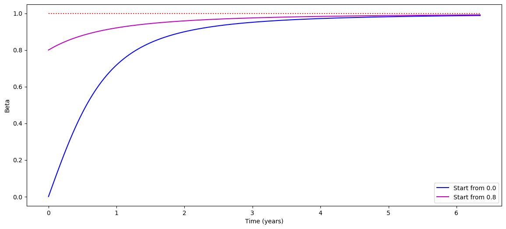
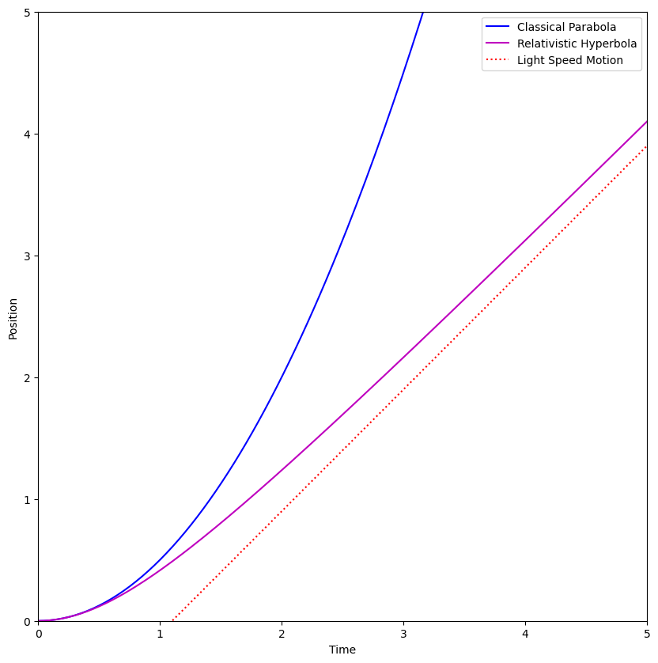

10. Relativistic Force and Acceleration#
10.1. Background#
Dynamics is the study of how motion of an object changes with time. In the late 1600’s Issac Newton proposed a model for predicting the changes in motion of a slow moving (in 21st century terms) object. From observed changes in motion, a physicist could deduce the interactions that the object experienced. Each interaction is characterized by a vector, called a force, that is determined by where the object is, how fast it is traveling, and values of quantities such as mass, electrical charge, etc.
Newton suggested that if one calculates the vector sum of all the forces acting on the object, then this net force equals the rate of change of the momentum of the object. Mathematically,
where \(m\) is the mass of the slow moving object, \(\vec{v}\) is the velocity relative to the observer of the object and \(dt\) is the (infinitesimal) time interval. If the net force is zero, the momentum will remain constant. If we can take \(m\) to be a constant, the last term becomes mass time acceleration, or the famous \(\vec{F}=m\vec{a}\). This encapsulates Newton’s first and second laws of motion.
Newton also has a third law, which comes into play when a system has multiple interacting pieces, each with its own momentum. For two masses, say \(m_1\) and \(m_2\), the \(m\vec{v}\) in Eq. (10.1) becomes \(m_1\vec{v}_1 + m_2\vec{v}_2\) to represent the total momentum. If the net force on the system from the outside is zero, Eq. (10.1) demands that the rates of change of the momenta of the pieces of system must be equal and opposite. The force on each piece of the system from the other piece of the system (since there is no net external force) must therefore be equal and opposite.
This law is often mischaracterized as “every action has an equal and opposite reaction”, but this expression gives the impression it deals with two different actions: you hit me, and I’ll hit you back. But really it means that if a truck hits an insect, the insect will exert the same force on the truck as the truck exerts on the insect (the enormous difference in masses leads to the change in the velocity of the truck being much, much, much smaller than the change in velocity of the insect). The third law is about a single, mutual, simultaneous, force of interaction between two objects.
While this model of three laws worked well for the speeds that were known in the 1700s, its application to objects moving near the speed of light raises some problems. One problem is with the \(dt\) term. As we know now, \(dt\) depends on the reference frame of the observer and is therefore not actally a scalar, as Newton would have understood it to be. If the velocity is a vector, and \(dt\) is not a scalar, then the net force is not a vector.
Second, there is nothing inherent in Equation (10.1) to inhibit a net force from changing the object’s speed to an arbitrarily fast value. This is no problem for Newton, who never had to deal with very large speeds, but we now know that nothing can move faster than \(c\), the speed limit of the universe. Equation (10.1) has no built in speed limit.
Third, the relativity of simultaneity means that Newton’s Third Law can no longer be relied upon. If every force is to be paired with a reverse force that acts at the same time, that simultaneity may no longer be valid in all reference frames, and one could imagine a reference frame in which the interacting forces are no longer simultaneous and therefore not balancing each other out. Only constant forces could consistently maintain reciprocity.
To fix these problems, we need to cast Equation (10.1) in four-vector form. Then we can predict the acceleration of objects near the speed of light and characterize their motion. But before we dive into the four-vector analysis, there is an interesting observation to be made about how the structure of the Lorentz factor itself is tied deeply into the mechanics of energy and motion.
10.2. Dynamics from the Lorentz Factor#
We originally derived the Lorentz factor back in Section 3.3 as a way to keep the speed of light constant in all relatively moving reference frames, leading to an interpretation of the factor as a ratio of the time interval between two events in the same location to the time interval between those same two events in a relatively moving reference frame (aka time dilation).
As we expanded our understanding of the process of characterizing space, time, and motion as observed in reference frames in relative motion, the same Lorentz factor showed up over and over again in different contexts. The Lorentz transformation matrix required \(\gamma\)s in four of its terms, we saw that as time intervals stretched by \(\gamma\), space intervals shrunk by \(\gamma\). The factor \(\gamma\), containing as it does the terms \(\beta\) is clearly closely linked to space, time, and motion therein.
It is therefore no surprise that it can shed insight into momentum and energy, as these concepts are linked to motion through the concept of (rest) mass. Let us begin with the Lorentz factor and explore how it can lead to connections between space, time, energy, and momentum. Start with writing the Lorentz factor this way, assuming \(c=1\) to make our lives easier:
Square both sides and move the right side to the left:
Take the differential, treating \(\gamma \vec{v}\) as a single entity:
Divide out the \(2\gamma\) and multiply through by rest mass \(m_0\):
Move the second term to the right and move the scalar inside the differential, while putting the \(c\) back in:
We can identify the left side as \(dE\) and the right side as having \(\vec{p} = \gamma m_0 \vec{v}\), so this is none other than
So the work-kinetic energy theorem could be said to be contained right inside the Lorentz factor from the beginning!
This derivation sometimes seems a little magical, because the introduction of such things as \(m_0\) seems arbitrary at the moment. It is perhaps useful to start with the work-energy theorem (Equation (10.7)) and work backwards to see how the Lorentz factor falls out of it, rather than the other way around. It’s not magic; it’s that the Lorentz factor ties together space, time, and motion, and once you throw mass into the mix, that brings in energy as well, so this is just a beautiful, if perhaps startling, example of how the universal speed limit ties concepts together for self-consistency, even when we think down here in our world of slow speeds that these concepts are independent.
10.3. Newton’s Second Law with Four Vectors#
To fix Equation (10.1), we keep the underlying meaning of the equation but recast it in relativistic terms, as we did to get four velocity from four displacement. Instead of \(d\vec{p}/dt\), we write
The four force is the derivative (with respect to the proper time, a scalar) of the four momentum. Since \([p_4]\) is a proper 4- vector and \(dt_0\) is a scalar, then \([K_4]\) is also a proper 4-vector. The letter K is in the 4-force to make it easier to distinguish between it and the vector force used by Newton. This form of the force is often called the Minkowski Force in honor of H. Minkowski, who introduced the 4-vector notation in the early 1900s.
Using the definition of the momentum 4-vector in terms of the Newtonian velocity \(\vec{v}\), with components \(v_x\), \(v_y\), and \(v_z\) gives:
where we again re-define the velocity and momentum vectors to include the relativistic \(\gamma\) term that Newton missed because he never measured objects moving near the speed of light.
10.4. The Minkowski Force#
The Newtonian force vector is related to the momentum by Equation (10.1) In this equation, \(dt\) is the time as measured by an observer who sees the object moving with velocity \(\vec{v}\), not the observer in the rest frame of the object, If we convert the times in Equation (10.9) from the rest frame to the moving reference frame using the time dilation Equation (6.6), Equation (10.9) becomes:
The three spatial terms of the Minkowski force are the components of the Newtonian force, multiplied by a factor of \(\gamma\).
Note
Note that the \(\gamma\) in Equation (10.10) comes from changing the \(dt_0\) into \(dt\). There is a second factor of \(\gamma\) hidden inside the definition of \(\vec{p}\). We did NOT just pull that \(\gamma\) from inside \(\vec{p}\) to the outside! The factor of \(\gamma\) inside \(\vec{p}\) came from converting \(dt_0\) into \(dt\) for the velocity, but there is a second derivative in the force, and therefore two factors of \(\gamma\).
The time component needs a little more careful attention to interpret it properly. Clearly, it will be related to the rate of change of the energy of the object experiencing the force. This rate of change is called the power delivered to the object. How is this related to the force? In Newtonian terms, the work done on an object by a force as the object displaces by some amount \(d\vec{x}\) is given by \(dW = \vec{F}\cdot d\vec{x}\) (Eq. (10.7)). The power is therefore \(P = dW/dt = \vec{F}\cdot \vec{v}\) (if the force is constant!).
Let us therefore see what happens when we take the dot product of the four velocity with the four force:
However, we can take advantage of the fact that \(d(x^2)=2xdx\) to write this as
But we know that \([v_4]^2\) is the Lorentz invariant \(-c^2\), which is also a constant in time. So
The result of the four dimensional dot product must therefore be zero, so let’s write it out in terms of components:
Therefore
and
So the Minkowski force becomes
Again, we know from Newtonian mechanics that the rate of change of the energy of an object is \(\vec{F}\cdot\vec{v}\), and if we compare the forms of \(K^0\) in Equations (10.9) and (10.17), we see that
so \(\vec{F}\cdot\vec{\beta} = d(\gamma m_0 c)/dt\), as you might expect, and the time component of the Minkowski force is telling us the power being delivered to the object experiencing the force.
Note
It’s interesting to note that although \(\vec{F}\cdot\vec{v}\) is power, and has dimensions of energy per time, \(\vec{F}\cdot\vec{\beta}\) has dimensions of force, and yet it is telling us the power, because all you need to do is multiply \(K^0\) by \(c/\gamma\) and you get the power. This is analogous to expressing time in units of distance (like in a spacetime diagram) through multiplication by the speed of light.
10.5. The Size of the Minkowski Force#
With all the other four-vectors we have explored so far, it was useful to take advantage of the fact that their sizes are Lorentz invariants. For the displacement four-vector, the size was \(-c^2dt_0^2\), the proper time. The size of the velocity was \(-c^2\) and the four-beta was simply \(-1\). For the four-momentum we got a size of \(-m_0^2c_2\). The size of the Minkowski Force is nowhere near as simple, but the fact that it is still Lorentz invariant leads to interesting implications.
To get the size of the Minkowski force, we do the same thing we’ve always done – square each term and add them up:
where we take \(F\) to be the magnitude of the regular three-fource (\(F_x^2+F_y^2+F_z^2\)). We plug in the zeroth component from Equation (10.16) to get
using the dot product such that \(\theta\) is the angle between \(\vec{F}\) and \(\vec{\beta}\) (in this frame). This looks much more complicated than the four-vector sizes we’ve seen before, but since \([K_4]\) is a four-vector, it must also be Lorentz invariant. In particular, it must be the same value in the frame where the particle is instantaneously at rest. In that frame, \(\beta=0\), so we just get \(F^2\) (it’s interesting that this four-vector size is positive, while all the other ones we’ve seen so far were negative!).
Therefore, if \(F^\prime\) is the force in some other frame
This has interesting implications depending on the angle between the force and the velocity. If the force is parallel to the velocity, then the cosine is 1 and the fraction cancels to one: the force is the same in both frames! If, on the other hand, the force is perpendicular to the motion, then the cosine is zero and \(F^\prime = F/\gamma\): the perpendicular force in the moving frame is smaller than the force in the frame at rest. This will be very important in understanding the relation between electricity and magnetism in the next chapter.
10.6. Lorentz Transforming Forces#
Another way of thinking about how the forces transform (thanks to Dan Watson for this idea) is to go back to the definition of force as the limit of \(\Delta \vec{p}/\Delta t\) in the limit as \(\Delta t \rightarrow 0\). We know how both momentum and time transform between reference frames, so we can see how this limit transforms.
We know going all the way back to Equation (6.4) that
More recently, Equation (8.9) tells us how to transform the three-momentum:
Which means we can construct a limit-based definition of force:
In this case, since we are taking \(\Delta t\) to be very small, we can approximate the acceleration as constant, which means \(\Delta x \propto \Delta t^2\). This is second order in \(\Delta t\) so in the limit, the second term in the denominator will be much smaller than the first, and can therefore be ignored.
The numerator is a little more complicated, but consider that the work energy theorem lets us connect the change in energy to \(\Delta x\), which is again second order in \(\Delta t\). We can therefore drop that, too. The terms out front cancel, and \(F_x^\prime = F_x\), the same result we got from the size of the Minkowski force.
For the perpendicular directions, the denominator is unchanged, but the numerator is now just \(\Delta p_y\) (or \(z\), of course). This means that although we can discount the \(\beta\Delta x\) as being too small, we cannot cancel the \(\gamma\) out front. Therefore \(F_y^\prime = F_y/\gamma\), which is also the same result we derived from the size of Minkowski force.
10.7. The Acceleration Four Vector#
Although Special Relativity demands that any inertial reference frames we consider be moving at constant relative velocities, there is nothing to prevent objects within a particular reference from from accelerating. You do have to be careful about switching frames, though, because you can’t use the SR rules to switch into a rest frame for an accelerating object!
The relativistic acceleration, a well defined but strange quantity, can be modeled in two ways. First, it would be the proper time derivative of the 4-velocity:
or one could use the relativistic analog of Newton’s law for a particle of constant rest energy (mass):
Consider an observer in the lab who sees a particle of mass \(m_0\), traveling in the \(+x\) direction with some speed \(v\). A force is then applied to the particle in some arbitrary direction, causing the observer to see a change in the particle’s velocity in the \(x\), \(y\) and \(z\) directions (\(dv_x\), \(dv_y\), and \(dv_z\)). This observer will measure an acceleration \(\vec{a} = d\vec{v}/dt\). We can write down the four-acceleration as observed in the lab as:
Remember that \(\gamma\equiv1/\sqrt{1-\beta^2}\) has all three components of velocity in it: \(\beta^2\equiv \beta_x^2 + \beta_y^2 +\beta_z^2\). Since both \(\gamma\) and the velocity are changing with time, we must use the product rule of calculus to evaluate Equation (10.27):
Taking the derivative of \(\gamma\) works like this:
This is a complicated relationship that depends on the three components of the velocity as well as \(dv_x\), \(dv_y\), and \(dv_z\).
Placing this result back into Equation (10.28) and using the fact that \(dc/dt=0\) gives us:
Equation (10.30) is a very complex equation, not least because each component of \([a_4]\) depends on all three components of both the velocity (through \(\beta\)) and the acceleration measured by the observer in the lab. This is very new to us at this point: that the acceleration in \(x\) should depend on both the velocity and acceleration in \(y\) and \(z\). We are used to the spatial dimensions being independent of each other. That is apparently no longer the case. Of course, the correspondence principle still applies, and you can see that if \(\beta\rightarrow 0\), the first terms all drop out, \(\gamma\rightarrow 1\) and we get back acceleration is the derivative of the velocity, with independent dimensions, just as we expect in Newtonian mechanics.
It is hard, perhaps impossible, to get any kind of intuition out of Equation (10.30), but we can look at a special case to see what happens. Consider the case where a constant force is being exerted on a particle in the \(x\) direction only (\(\vec{F} = F_x\hat{x}\)), and the particle starts from rest. Then the velocity will only have an \(x\) component, so we can just use \(\vec{v} = v\hat{x}\) and drop the last two components of the four vector, since there will never be any motion in the \(y\) or \(z\) directions. Then Equation (10.30) simplifies a bit:
The relativistic form for Newton’s Second law (Equation (10.26)) then becomes
Since the four-vectors are the same, we can compare the factors out front to find that
The correspondence principle check is satisfied because for \(\gamma\approx 1\), this is just \(a=F/m\), as Newton would expect. However, as \(v\rightarrow c\), \(\gamma \rightarrow \infty\), which means the acceleration is going to plummet to zero as the speed gets close to \(c\), regardless of the fact that the force has not changed. Yet, again, the universe conspires to make sure that nothing can go faster than \(c\). The closer you get to \(c\), the harder it is to get any further acceleration. This limit is displayed in Fig. 10.1 – two initial speeds are shown to indicate that it doesn’t matter how fast the object is moving to begin with. Even under a constant force, it will never move faster than the universal speed limit.

Fig. 10.1 A graph of \(\beta\) as a function of time (in years) in the lab frame for an object of mass 1 kg, experiencing a constant force of \(9.81\) N in the \(x\) direction. The blue line shows the object starting from rest, while the magenta line shows the object starting from \(\beta=0.8\). In neither case does the speed increase beyond \(\beta=1\), which is indicated by the red horizontal dotted line.#
Fig. 10.1 also shows that if you could push an object with a force equal to its weight on the surface of the Earth, within a few years, the speed of that object would approach the speed of light, even if it started out from rest. However, in practical terms, maintaining even such a modest thrust for years without fail is hard to do without running out of fuel. But that’s another topic for another day.
The time component of Equation (10.32) shows yet another reason that it is impossible to get a particle of non-zero rest energy to travel at the speed of light. Recalling that the time component of the force is related to the energy required to change the velocity in time interval \(dt\) (Equation (10.18)), we can rewrite Equation (10.32) as
The change in energy \(dE\) associated with a velocity change \(dv_x\) can be found by examining the time component:
or
The rest mass is constant, but as \(v_x\) gets close to \(c\), \(\gamma\rightarrow\infty\), so the \(dE\) that would need to be provided to keep providing a finite \(dv\) would go to infinity. Once again, it would take an infinite amount of energy to actually get to \(c\).
Another way of looking at it is that if you keep providing the same energy \(dE\) for each “kick” (which is to say during each time step \(dt\)), as \(v_x\rightarrow c\), \(\gamma \rightarrow \infty\), while \(m_0\) is a constant, so \(dv_x\) has to go to zero to balance the \(\gamma\) and keep \(dE\) constant. The same energy input causes a smaller and smaller change in velocity. As long as \(v_x\ll c\), then \(\gamma\approx 1\) and then you could simply integrate both sides to get \(\Delta E = \frac{1}{2} m_0 \Delta (v_x^2)\) This is what your newtonian intuition would expect for increasing kinetic energy. However, as \(v_x\rightarrow c\), that intuition is no longer accurate.
The general case of applying the relativistic Newton’s law to a particle having laboratory accelerations and velocities in all three directions, as well as the force having all three components is very complicated, as \(\beta\) and \(\gamma\) have all three components of the velocity in them. In general, the force and the acceleration will not be in the same direction, something that does not happen in classical physics.
This is the resolution of the dilemma we first encountered at the end of Chapter 7: the acceleration is a second derivative, so time dilation comes into play in an even more complex manner, through the two applications of \(d/dt\). Time dilation depends on the total relative speed, not just the separate perpendicular components of velocity. The total speed, including all directions, combined with the effect of time dilation through the various \(\gamma\) and \(dt\) factors, provides the mechanism by which the motion in one dimension can affect the motion in a perpendicular direction, ensuring that the total speed never goes above \(c\).
For example, let’s say a particle has both \(v_x\) and \(v_y\) greater than zero. Further, let’s say that there is a force acting on this particle in only the \(x\) direction that is increasing the speed \(\beta\). If you look at \([K_4]^2\) (the third component of the Minkowski force) in Equation (10.30), there are two terms. If \(v_y>0\), and the total speed is increasing (\(d\beta/dt>0\)), then \(\gamma^2v_y\beta d\beta/dt>0\). If there is no force in the \(y\) direction, then \([K_4]^2=0\), which means \(dv_y/dt<0\), to make sure these two terms cancel out. The particle must slow down in the \(y\) direction as it keeps increasing its velocity in the \(x\) direction.
10.8. Examples#
10.8.1. Example 10.1#
Calculate the Minkowski force exerted on an electron traveling vertically upward near the surface of the earth with \(\beta = 0.866\).
Solution: Let the \(z\) axis be vertical with the positive value pointing up. Near the surface of the earth, the electron experiences a gravitational force \(\vec{F}_g = m\vec{g} = -m\times9.81~{\rm N/kg}~\hat{z}\). The mass of the electron has a value of \((9.10938188\pm0.00000072)\times 10^{-31}\) kg. The force exerted by gravity on the electron is therefore:
Since the force is pointing only in the \(-\hat{z}\) direction, the \(F_x\) and \(F_y\) components are zero. Using Equation (10.17) we now can find the spatial components of \([K_4]\) by calculating the value of \(\gamma\) when \(\beta=0.866\). \(K_x\) and \(K_y\) are therefore zero, but \(K_z = \gamma m g\), or \(-1.78\times10^{-29}~{\rm N}\). Since the motion is in the \(+\hat{z}\) direction, the time component becomes:
Combining these results gives the Minkowski force:
Remember that the actual force experienced by the electron will be \(K_3/\gamma\), or half the number given in Equation (10.39), because \(\gamma=2\) at this speed. The time component still has units of newtons, because \(K^0\) has a factor of \(1/c\) in it. If you want to know the power delivered to the electron, you have to take the \(K^0\) term as given in Equation (10.39) (without the \(i\), of course) and multiply it by \(c/\gamma\). This would imply the electron is losing energy at a rate of \(2.31\times10^{-21}\) watts.
10.8.2. Example 10.2#
Another way to examine the four-acceleration in action is to consider the trajectory of a particle starting from rest and experiencing a constant force in x direction (This example is adapted from [Griffiths, 2023]). In Newtonian mechanics, we would expect the particle to undergo a constant acceleration of \(a=F/m_0\), and therefore have a velocity of \(v(t) = Ft/m_0\). If we place the origin at the starting location of the particle, the particle position as a function of time would be a parabola \(x(t) = Ft^2/2m_0\).
Of course, we now know that \(v(t)\) cannot, in fact increase forever, and as the graph in Fig. 10.1 shows, it must level off at \(v=c\). We can use our new tools to derive a more accurate trajectory of \(x(t)\) that will take this speed limit into account.
We start with Newton’s second law in one dimension, understanding that we are treating it as relativistic from the beginning: \(F=dp/dt\). If \(F\) is a constant, we can integrate both sides to get \(p(t) = Ft\). However, we can’t just divide through by \(m_0\) to get the classical result, because there is also a factor of \(\gamma\) inside the \(p\)! We therefore get the slightly more complicated version of
Solve for \(v\) to get
or
We can move the \(dt\) over to the right side and integrate both sides.
where \(z\) is a dummy variable standing in for the time dependence. This is a u-substitution integral, using \(u(z) = 1+F^2z^2/m_0^2c^2\). Then \(du = 2F^2 z dz/m_0^2c^2\) and the integral becomes
We can simplify a little bit to get
Note that as \(t\rightarrow\infty\), this turns into \(x(t)\rightarrow ct\) (the square root becomes just \(Ft\) and the \(F\) cancels), which is linear and has a slope of \(c\). The speed limit of the universe is thus preserved. The correspondance principle also holds, because for very small values of \(t\), we can use a Taylor expansion to write the square root (in the form expressed in Equation (10.44)) as \(1+F^2t^2/2m_0^2c^2\). Multiply through the \(m_0c^2/F\) to get
We can interpret the first term as simply the position of the particle at \(t=0\) and subtract it off, but the second term is precisely what Newton would have predicted. Fig. 10.2 shows the functional form of Equation (10.45) as a magenta line, while the classical Newtonian parabola is the blue curve. To guide your eye, a speed of light trajectory is shown as a red dotted line. Note that the two solid curves coincide at small values of \(t\), as the correspondence principle says they should, but they diverge as the speeds get larger. The magenta curve eventually becomes parallel to the red dotted line as the slope approaches \(c\).

Fig. 10.2 A graph of \(x\) as a function of time (in arbitrary units) under constant acceleration, comparing the parabola predicted by classical physics with the hyperbola predicted by relativistic physics. The red dotted line is what you would expect a particle moving at the constant speed of \(c\) to do.#
10.8.3. Example 10.3#
An electron, traveling in the \(+x\) direction with \(\beta = 0.8666\), is subjected to an electric field that exerts a force (as measured in the laboratory reference frame) of \(1.000\times10^{-13}\) newtons in the \(+x\) direction.
a) Calculate the acceleration of the object if dump truck physics could be used to model this situation.
b) Calculate the acceleration of the object using a relativistically correct model.
c) Calculate the energy required to increase the speed by 1000 m/s.
Solution:
a) Using Newton’s Second Law:
This is really an awesome acceleration. In \(10^{-14}\) seconds, itself an unimaginably small time interval, the electron would gain \(10^3\) m/s in velocity.
b) Equation (10.33) is used to find the valid acceleration. With \(\beta=0.8666\), \(\gamma = 2\), so \(\gamma^3=8\). The Newtonian model is eight times too fast.
The acceleration is down by a factor of 8, but it still is incomprehensibly fast.
c) The energy required to increase the speed by 1000 m/sec (an increase in speed of only 10 parts per million) is found with Equation (10.36):
This might look like a small number. In eV, it’s about 12. That’s almost enough to rip an electron off a hydrogen atom. It’s an ultraviolet photon. An electron going at 0.8666 would have a KE of 511 keV, so 12 eV would be 20 parts per million. So you’re putting in a larger fraction of energy than you are getting out in terms of a percentage speed increase. This is a specific case of the general pattern that the closer you get to the speed of light, the more energy it costs to get less speed.
10.9. Problems#
An electron, with electrical charge \(q_e = 1.602\times10^{-19}\) couloumbs, is traveling at speed \(\beta = .9999980\) in the horizontal \(+x\) direction with respect to an observer in a laboratory that is located near the surface of the earth. At time \(t = 0\) in the lab frame, the electron enters an electric field of \(E = 1.000\times10^6\) N/C also pointing in the \(+x\) direction. The classical model for calculating theforce exerted on a charged object by an electric field is \(\vec{F}_e = q\vec{E}\).
a) Calculate the Minkowski force that the particle experiences in its own rest frame at \(t=0\). The clocks in its rest frame are synchronized with those in the lab at \(t=0\), but of course will diverge later. Note: the gravitational force is very very small compared to the electric force; you can ignore it for this problem.
b) Calculate the acceleration that the particle experiences at time \(t = 0\).
c) Use the Lorentz transformation to find the components of the Minkowski force that is measured by the experimenter in the lab at time \(t = 0\).
d) Calculate the acceleration measured by the observer in the lab at time \(t = 0\).
e) Calculate the time rate of change of momentum that the observer in the lab measures for this electron at time \(t = 0\). Get this from the Minkowski force.
f) Calculate the energy needed to increase the speed of the electron to \(\beta = 0.9999990\).
g) Calculate the \(x\)-component of the force measured by the observer in the lab. Does this result surprise you? Why or why not?
Now, suppose that this electron, traveling in the \(+x\) direction (horizontal), at time \(t = 0\) enters an electric field that is pointing in the \(+z\) direction (vertically up) instead of pointing in the \(+x\) direction. As we will see in the next chapter, if the \(E\) field is perpendicular to the relative velocity vector, the field will be different in the rest frame of the electron, so don’t use that frame for the next three questions.
h) Calculate the Minkowski force exerted on this electron as measured in the laboratory reference frame.
i) Calculate the acceleration of the electron as measured by observer in the laboratory reference frame.
j) Show that in this case, the acceleration of the eIectron and the force applied to the electron do not point in the same direction.
An observer sees a particle of mass \(m_0\) moving with velocity \(\vec{u}\) that has a force \(\vec{F}\) exerted on it. Show that a second observer, moving with speed \(v\) in the \(+x\) direction with respect to the first observer, measures the power delivered to the particle to be:
A particle, starting from rest, travels for a time interval \(\Delta t\) (in the lab reference frame). The acceleration at any time, as measured in the instantaneous rest frame of the particle, is 9.8 m/s\(^2\). How long must \(\Delta t\) be before the observer in the lab reference frame sees the particle traveling at \(c/2\)? This is very similar to the analysis that produced Fig. 10.1.
Warning
An accelerating particle cannot technically have a “rest” frame, because no matter what frame you choose, the particle’s velocity will never remain zero. We can, however, talk about a frame at which a particle is instantaneously at rest, and imagine performing an infinite sequence of Lorentz transformations to “keep up” with the particle, so that at any given moment, we can define a frame in which, at least for that moment, the particle is approximately at rest. You just have to remember that the approximation is only valid at a particular moment.
Equation (10.14) shows that four-velocity and the Minkowski force are orthogonal. Since \([K_4]=m_0[a_4]\), the four-velocity and the four-acceleration should also be orthogonal. Show that works with Equation (10.30).
Show that taking the time derivative of Equation (10.42) will indeed get you Equation (10.33).